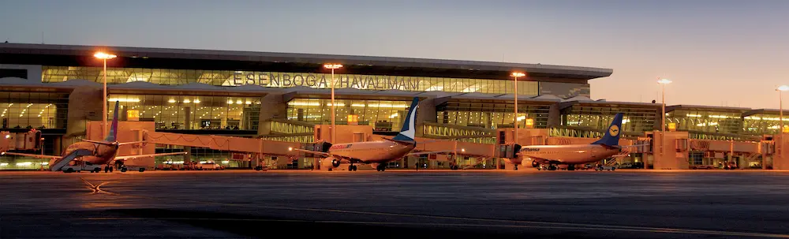
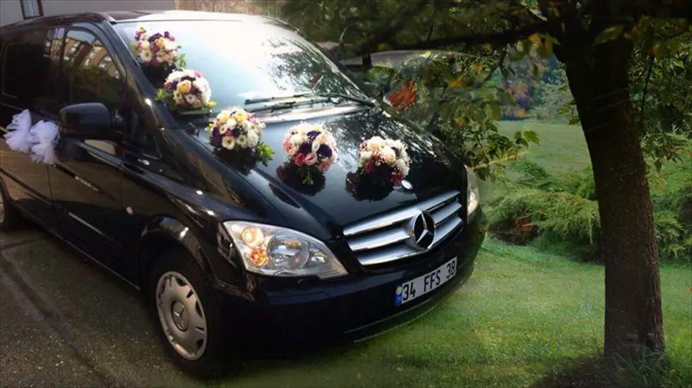
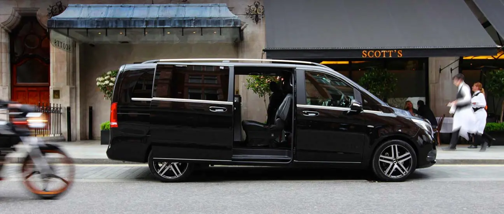
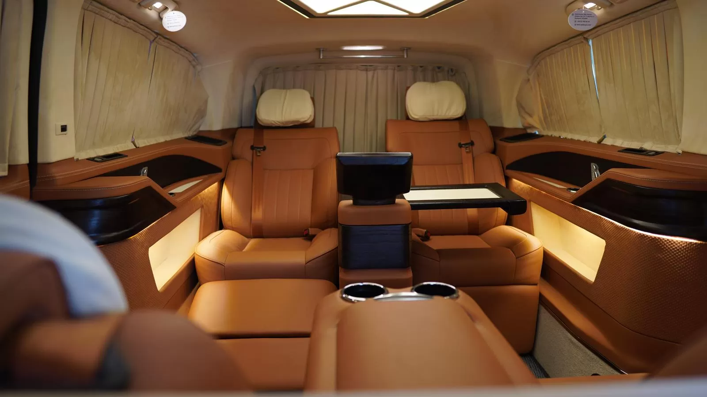

Esenboğa Havalimanı'na Ulaşımda Neden VIP Transfer Seçmelisiniz?
Taksi sırası beklemek veya toplu taşıma karmaşasıyla uğraşmak yerine, neden konforlu bir başlangıç yapmayasınız?
Devamını OkuSeyahat ipuçları, Ankara rehberi ve VIP taşımacılık dünyasından haberler.

Transfer RehberiTaksi sırası beklemek veya toplu taşıma karmaşasıyla uğraşmak yerine, neden konforlu bir başlangıç yapmayasınız?
Devamını Oku
HizmetlerEn özel gününüzde sürprizlerle karşılaşmayın. Şoförlü VIP araç kiralamanın avantajlarını inceledik.
Devamını Oku.webp) Gezi Rehberi
Gezi Rehberi
Şehrin gürültüsünden uzaklaşmak isteyenler için Beypazarı, Kızılcahamam ve daha fazlası.
Devamını Oku
HakkımızdaÜst düzey yöneticiler ve devlet erkanı için sunduğumuz özel güvenlikli taşımacılık hizmeti.
Devamını OkuPeri bacalarına yolculuk hiç bu kadar keyifli olmamıştı. Şehirler arası VIP transfer detayları.
Devamını Oku
AraçlarımızTV, buzdolabı, masajlı koltuk ve daha fazlası. Yolculuğunuzu ofis konforuna dönüştürün.
Devamını Oku